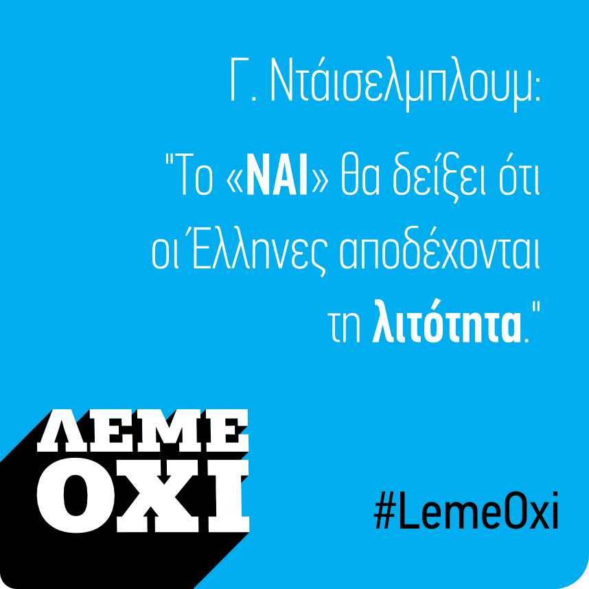

<div class="cbp-l-inline">
    <div class="cbp-l-inline-left">
        
    </div>

    <div class="cbp-l-inline-right">
        <div class="cbp-l-inline-title">Ντάισελμπλουμ: &#34;Το #NAI σημαίνει αποδοχή της λιτότητας.&#34; #LemeOxi</div>
        <br/>
        <ul class="social-icons">
          <a href="javascript:;" onclick="window.open('https://www.facebook.com/sharer/sharer.php?u=http://www.leme-oxi.gr/karta/42/', '_blank', 'height=400,width=800,left=250,top=100,resizable=yes', true); return false;">
            <i class="icon-custom rounded-x icon-bg-blue fa fa-facebook"></i>
          </a>

          <a href="javascript:;" onclick="window.open('https://twitter.com/intent/tweet?url=http://www.leme-oxi.gr/karta/42/&text=%CE%9D%CF%84%CE%AC%CE%B9%CF%83%CE%B5%CE%BB%CE%BC%CF%80%CE%BB%CE%BF%CF%85%CE%BC%3A%20%22%CE%A4%CE%BF%20%23NAI%20%CF%83%CE%B7%CE%BC%CE%B1%CE%AF%CE%BD%CE%B5%CE%B9%20%CE%B1%CF%80%CE%BF%CE%B4%CE%BF%CF%87%CE%AE%20%CF%84%CE%B7%CF%82%20%CE%BB%CE%B9%CF%84%CF%8C%CF%84%CE%B7%CF%84%CE%B1%CF%82.%22%20%23LemeOxi;', '_blank', 'height=400,width=800,left=250,top=100,resizable=yes', true);return false;">
            <i class="icon-custom rounded-x icon-bg-blue fa fa-twitter"></i>
          </a>
          <a href="karta/42/index.html">
            <i class="icon-custom rounded-x icon-bg-blue fa fa-link"></i>
          </a>
        </ul>
    </div>
</div>
